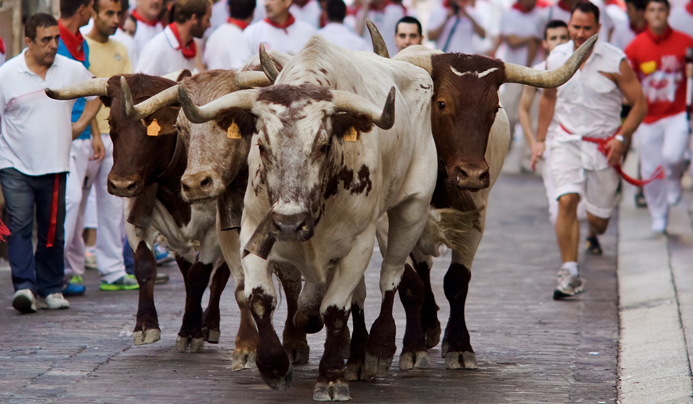
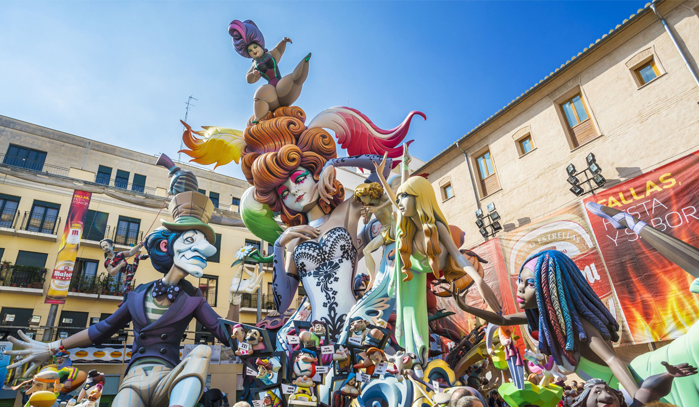
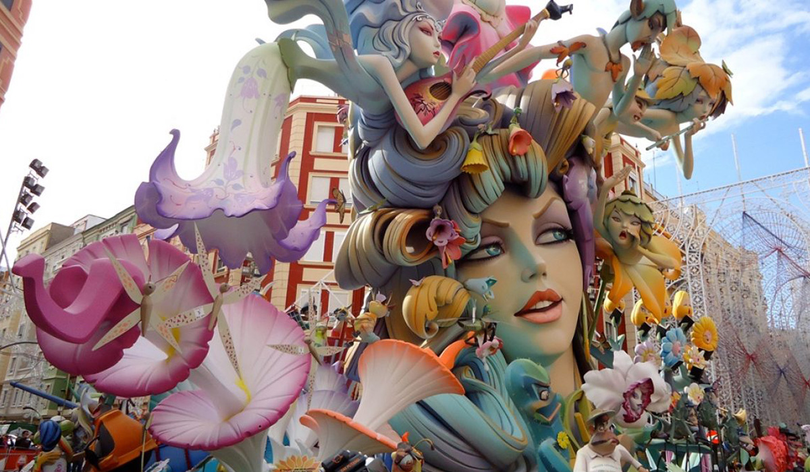

박스
- San Fermin (산 페르민)
- - 팜플로나 산 페르민 축제/ 매년 7월 6일~7월 14일
- 스페인 북부 바스크 지역의 수호 성인의 이름으로, 그를 기리기 위해 그의 출신지인 팜플로나에서 시작한 행사가 지금의 세계적인 축제로 자리잡게 되었다.
- 길들여지지 않은 소들을 투우장으로 인도하는 이 행사는 3분 남짓 밖에 되지 않지만, 매우 긴박하고 아찔한 상황들을 연출해낸다.
- 수백명의 사람들이 붉은 스카프를 매고 직접 소들과 함께 달리며 투우장으로 소를 직접 유인하기 때문에 위험성이 높다.

박스
- Las Fallas (라스 파야스)
- - 발렌시아 불꽃축제/ 매년 3월 15일~3월 19일
- 아파트 높이와 맞먹는 거대한 조형물들을 전시하고, 축제의 막바지에 이것들을 모두 태워 버림으로써 새 봄이 오는 것을 기념
- 파예 혹은 니노트(ninot)라고 불리는 이 조형물들은 주로 정치적인 인물들을 풍자하거나 유명한 애니메이션의 한 장면은 묘사하는 등 다양한 주제를 담고 있다.

